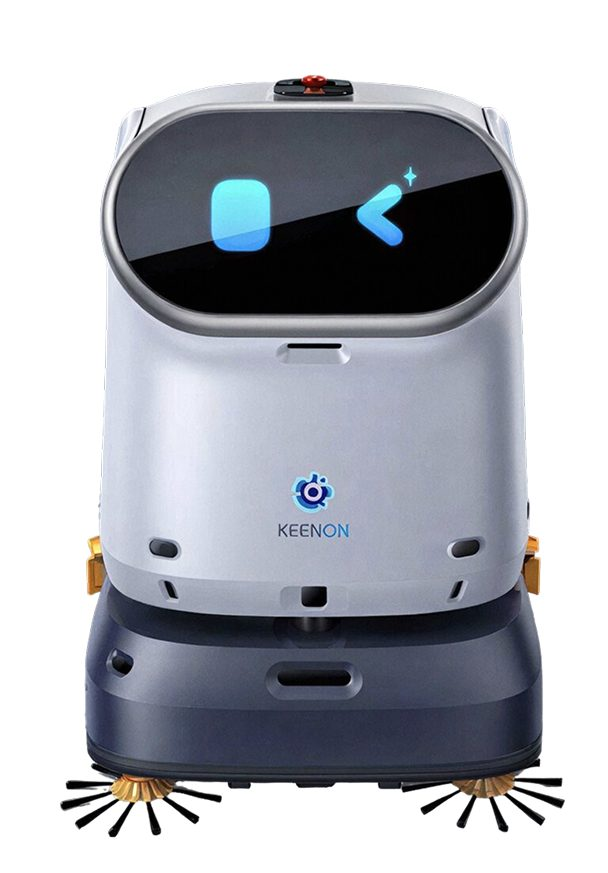
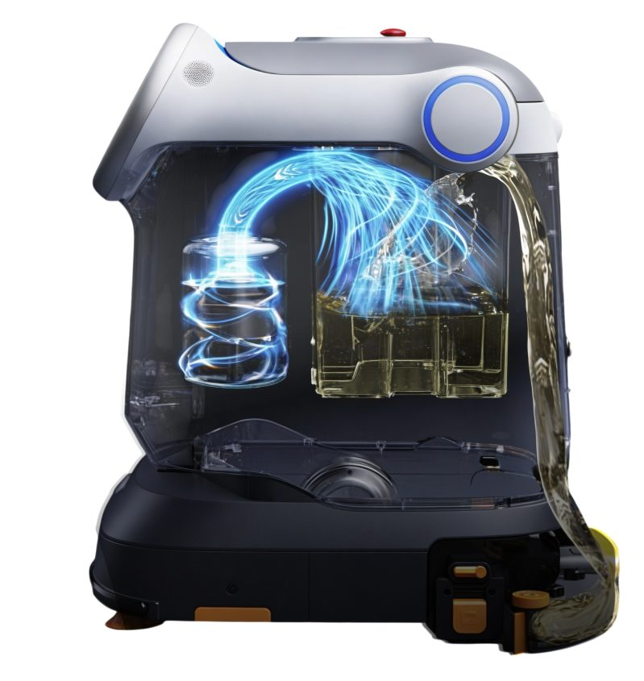

Робот-уборщик Keenon Cleanbot C40
Keenon Cleanbot C40 (в каталоге также может встречаться написание KLEENBOT C40) является профессиональным роботом-уборщиком производства Keenon Robotics. За один проход машина подметает, выполняет вакуумную уборку, моет пол и проводит сухую протирку. Система из трех щеток разделяет сбор сухого мусора и влажную уборку, благодаря чему пыль не превращается в грязь. Производительность достигает 1 100 м² в час при ширине подметания 560 мм. Модель рассчитана на коммерческие помещения с высокой проходимостью: торговые залы, офисы, учебные заведения, залы ожидания.

Коротко о модели и цена
Новый блок: параметры и покупка| Производительность | до 1 100 м²/ч при ширине подметания 560 мм |
| Режимы | подметание, вакуумная уборка, мойка, сухая протирка; три щётки разделяют сухой мусор и влажную уборку |
| Автономность | мойка до 5 часов, подметание до 12 часов, зарядка 2 часа, быстрая замена батареи |
| Навигация | лидар, две стереокамеры, четыре линейных лазера, три ультразвуковых модуля |
| Габариты | 578 × 500 × 690 мм без скребка, 70 кг с аккумулятором |
| Для каких объектов | торговые залы, офисы, учебные заведения, залы ожидания |
Три варианта поставки
Новый блок: комплектацииБазовая
С зарядной станцией
Полная
Нажмите на вариант, цена выше пересчитается. Состав комплекта определяется в коммерческом предложении.
Технические характеристики Keenon C40
Блок: таблица характеристик| Тип уборки | подметание, вакуумная уборка, мойка, сухая протирка |
| Производительность | до 1 100 м²/ч |
| Ширина уборки | подметание 560 мм с двумя боковыми щетками, мойка и вакуумная уборка 400 мм |
| Бак чистой воды | 16 л |
| Бак загрязненной воды | 14 л |
| Пылесборный мешок | 8 л |
| Аккумулятор | DC 25,6 В, 50 А·ч |
| Время работы | мойка до 5 часов, подметание до 12 часов |
| Время зарядки | 2 часа, поддерживается быстрая замена батареи |
| Навигация и датчики | лидар, две стереокамеры, четыре линейных лазера, три ультразвуковых модуля |
| Габариты (Ш × Г × В) | 578 × 500 × 690 мм без скребка, 616 × 550 × 690 мм со скребком |
| Вес | 70 кг с аккумулятором |

Возможности и преимущества
Блок: карточки-преимуществаЧетыре операции за один проход
Подметание, всасывание, мойка и протирка выполняются одной машиной, отдельная техника под каждую операцию не требуется.
Раздельная сухая и влажная уборка с системой из трёх щёток
Мусор поступает в пылесборный мешок, а не в бак с водой, за счет чего обслуживание требуется реже. Кроме того при такой системе минимизируется возникновение постороннего запаха.
Мультисенсорное трехмерное восприятие
Десять детектирующих компонентов обеспечивают непрерывную работу в потоке людей и объезд нестандартных препятствий.
Быстрая замена аккумулятора
Вторая батарея устанавливается на место разряженной за несколько секунд, благодаря чему смена продолжается без паузы на зарядку.
Съемный моющийся бак для загрязненной воды
Бак промывается отдельно, что исключает появление запаха и размножение бактерий.
Автоматическая зарядка, долив воды и подача моющего средства
По завершении задания машина возвращается на станцию, дозировка средства настраивается в приложении.
Широкий захват
Полоса подметания 560 мм сокращает число проходов на больших площадях.
Где применяется
Блок: фото-галерея + тегиРобот-мойщик наиболее эффективен для уборки в помещениях с ровным твердым покрытием.
Примеры объектов:
Робот-уборщик Keenon C40 применяется как для ежедневной поддерживающей уборки, так и для ночной мойки помещений.
Комплектация
Блок: текстВ стандартную поставку входит сам робот, комплект щеток (основная и боковые), водосборный скребок, пылесборный мешок, аккумулятор и зарядное устройство. Дополнительно поставляются вторая батарея для непрерывной работы и зарядная станция. Состав комплекта определяется в коммерческом предложении.
Сравнение с другими моделями
Новый блок: сравнение| Параметр | Keenon Cleanbot C40 | Pudu CC1 | Kleenbot C30 |
|---|---|---|---|
| Тип | автономный робот | автономный робот | автономный робот |
| Производительность | до 1 100 м²/ч | 700-1 000 м²/ч | м²/ч |
| Баки | 16 + 14 л, мешок 8 л | 15 + 15 л | л |
| Время работы | 5 ч мойка, 12 ч подметание | 5 ч мойка, 9 ч протирка | ч |
| Вес | 70 кг | 75 кг | кг |
| Цена от | N NNN NNN ₽ | N NNN NNN ₽ | N NNN NNN ₽ |
Дополнительно к роботу
Новый блок: допоборудование
Зарядная станция
автоматическая зарядка после смены

Запасная батарея
быстрая замена, работа без пауз

Док-станция с доливом и сливом
вода и зарядка без персонала
Цена и условия поставки
Блок: расчётЦена и условия поставки
Купить робот-уборщик Keenon Robotics C40 можно в одном экземпляре или заказать партию для оснащения нескольких объектов, от размера партии будет зависеть итоговая стоимость. Для получения расчета достаточно оставить заявку с указанием площади объекта и типа покрытия, после чего специалисты АТМ АЛЬЯНС подготовят коммерческое предложение с ценой, комплектацией и сроками исполнения. Поставки осуществляются по всей России, сервисная сеть АТМ АЛЬЯНС охватывает 48 городов.
Гарантия и сервис
Блок: гарантияНа поставляемое оборудование распространяется гарантия производителя. При необходимости специалисты АТМ АЛЬЯНС выполнят пусконаладочные работы на объекте, включающие построение карты помещения, настройку маршрутов и расписания, а также обучение персонала. Плановое обслуживание и замена щеток, скребков, фильтров и аккумуляторов обеспечиваются сервисной службой, расходные материалы хранятся на складе.
Где уже работает Keenon Cleanbot C40
Новый блок: кейсыТЦ, город
Ночная мойка зала, днём подметание при посетителях
Сеть супермаркетов
Партия с единым графиком ТО. число машин

Кампус
Коридоры и залы ожидания по расписанию. площадь
Объекты и цифры результата заполняет клиент; страница «Проекты» сейчас отдаёт 404.
Что пишут заказчики Keenon Cleanbot C40
Новый блок: отзывы и рейтингиОтзыв: как робот убирает, что с шумом, сколько времени освободилось у персонала.
Отзыв: пусконаладка, обучение, как работает док-станция ночью.
Отзыв: ковры, пороги, что пришлось доработать на объекте.
Для запуска собрать отзывы с Яндекс Карт и 2ГИС, тексты в прототипе условные.
Похожие модели
Новый блок: похожие модели